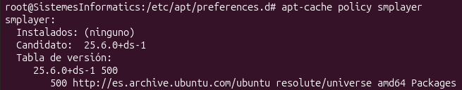
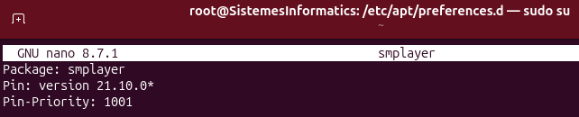
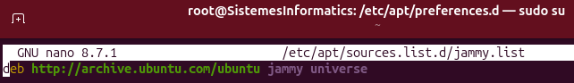
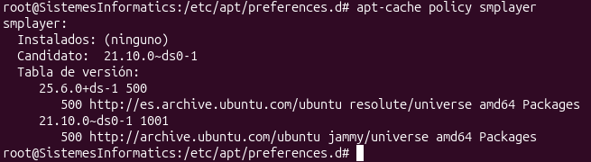
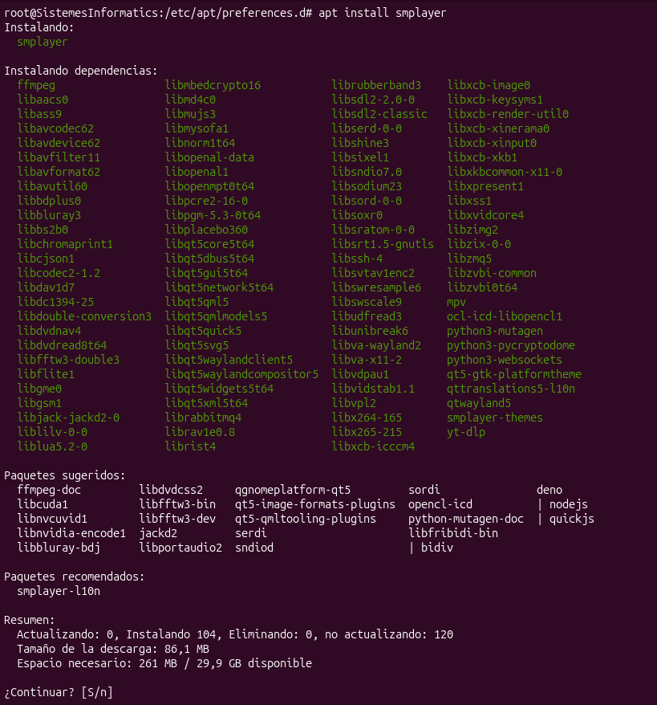
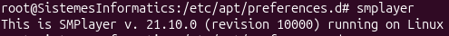

1. Instal·lació de paquets
Primer de tot, fem un apt-cache policy smplayer per comprovar el candidat actual (versió 25):
root@SistemesInformatics:/etc/apt/preferences.d# apt-cache policy smplayer
smplayer:
Instalados: (ninguno)
Candidato: 25.6.0+ds-1
Tabla de versión:
25.6.0+ds-1 500
500 http://es.archive.ubuntu.com/ubuntu resolute/universe amd64 Packages
root@SistemesInformatics:/etc/apt/preferences.d#
Crearem el fitxer smplayer en el directori /etc/apt/preferences.d/ i farem un update:
root@SistemesInformatics:/etc/apt/preferences.d# nano smplayer
root@SistemesInformatics:/etc/apt/preferences.d# apt updateContingut del fitxer /etc/apt/preferences.d/smplayer:
Package: smplayer
Pin: version 21.10.0*
Pin-Priority: 1001
Crearem el fitxer jammy.list en el directori /etc/apt/sources.list.d/ i farem un update:
root@SistemesInformatics:/etc/apt/preferences.d# nano /etc/apt/sources.list.d/jammy.list
root@SistemesInformatics:/etc/apt/preferences.d# sudo apt updateContingut del fitxer /etc/apt/sources.list.d/jammy.list:
deb http://archive.ubuntu.com/ubuntu jammy universe
Amb tot el procés completat, tornarem a executar la comanda apt-cache policy smplayer per comprovar el nou candidat, que ara és la versió 21.10.0:
root@SistemesInformatics:/etc/apt/preferences.d# apt-cache policy smplayer
smplayer:
Instalados: (ninguno)
Candidato: 21.10.0-ds0-1
Tabla de versión:
25.6.0+ds-1 500
500 http://es.archive.ubuntu.com/ubuntu resolute/universe amd64 Packages
21.10.0-ds0-1 1001
500 http://archive.ubuntu.com/ubuntu jammy/universe amd64 Packages
root@SistemesInformatics:/etc/apt/preferences.d#
Instal·lem el SMPlayer:
root@SistemesInformatics:/etc/apt/preferences.d# apt install smplayer
Executarem el SMPlayer, el qual directament ens confirma que comptem amb la versió 21.10.0:
root@SistemesInformatics:/etc/apt/preferences.d# smplayer
This is SMPlayer v. 21.10.0 (revision 10000) running on Linux